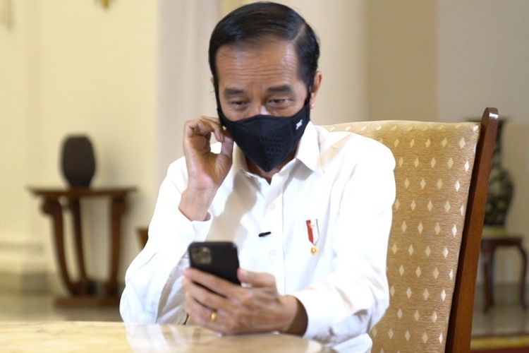
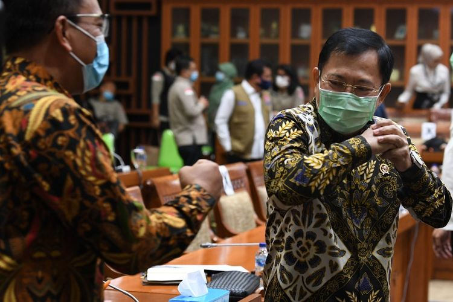

Tahun Pertama Periode Kedua Presiden Jokowi dan UU Cipta Kerja
Penulis : Wisnu NugrohoKompas.com - 19/10/2020, 13:00 WIB
Editor : Amir Sodikin
KOMPAS.com - Hai, apa kabarmu? Musim penghujan tampaknya sudah kita masuki
pekan-pekan ini. Hujan makin kerap turun bahkan jedanya hanya dalam hitungan hari saja.
Berkah dari langit yang disambut petani di desa-desa dengan syukur dan penuh harap bisa
menyuburkan tanah serta menumbuhkan tanaman disikapi secara berbeda oleh warga kota,
setidaknya Jakarta dan sekitarnya.
Banyak warga di Jakarta dan kota-kota besar lain menyikapi hujan apalagi yang intensitasnya
tinggi dengan perasaan cemas. Pengalaman tidak mengenakkan lantaran banjir yang
menyertai hujan membuat kecemasan meningkat setiap hujan lebat.
Awal 2020, sebelum sepanjang tahun kita disibukkan dengan penanganan Covid-19, warga
Jakarta dan sekitarnya mendapat hadiah tahun baru berupa banjir besar persis di awal Januari.
Setidaknya 53 orang meninggal karena banjir. Mata dunia internasional menyorot Jakarta dan
juga Indonesia untuk peristiwa alam berulang yang menimbulkan kerugian besar ini.
Makin kerapnya hujan dan mendekatnya Januari semoga menjadi peringatan bagi semua pihak,
khususnya pemerintah daerah untuk mengantisipasi banjir dan bencana lainnya.
Kita yang tinggal di perkotaan berharap bisa punya sikap yang sama seperti para petani di
desa-desa saat mendapati hujan turun. Bersyukur dan berpengharapan akan tanah yang subur
setelah hujan, bukan cemas berlebihan.
Dengan akan berakhirnya Oktober, kita menjadi sadar tahun baru 2021 sudah menjelang. Waktu
terasa berjalan demikian cepat meskipun kita sadar bahwa waktu tidak mempercepat,
tidak memperlambat.
Batin Menjerit dan Terguncang
anggota Komisi IX DPR sebelum mengikuti Rapat Dengar Pandapat di Kompleks Parlemen Senayan, Jakarta,
Kamis (27/8/2020). RDP tersebut membahas efektivitas pengorganisasian dan penganggaran dalam penanganan
COVID-19, termasuk perkembangan tentang uji vaksin untuk COVID-19. ANTARA FOTO/Puspa Perwitasari/nz
Apa rencana-rencanamu di tahun 2020 yang mewujud? Apa yang meleset?
Situasi pandemi Covid-19 pasti mengubah banyak rencana, merevisi rencana atau mungkin
membuat rencana baru sesuai situasi nyata.
Apa hasilnya? Mungkin tidak terlalu menggembirakan, seperti dialami hampir semua
sektor usaha.
Kita ada di kapal yang sama saat menghadapi pandemi ini. Kita mengalami kesulitan yang sama.
Pengalaman dan hasil yang mungkin tidak menggembiraakan hari ini adalah proses yang secara
tidak sadar membuat kita lebih kuat, lebih tangguh, lebih berkemampuan. Kecakapan karena
pandemi ini bisa jadi bekal kita di masa mendatang saat menghadapi situasi krisis.
Ini mungkin seperti hiburan di tengah kekecewaan. Tetapi, tidak ada salahnya mengendapkan
hiburan ini.
Sikap positif melihat kekecewaan jauh lebih berfaedah daripada sikap negatif. Perasaan terhibur
yang terungkap dalam kegembiraan juga baik untuk kesehatan jiwa.
Tahun pertama periode kedua
Oya, akhir Oktober selalu mengingatkan saya pada periodisasi pemerintahan. Lima tahun
menjadi wartawan Istana Kepresidenan Jakarta dan lima tahun kemudian menjadi editor politik
membuat ingatan itu lekat karena berulang tiap tahun.
Sejak 2004, saat pertama kali Indonesia melakukan pemilihan presiden secara langsung, kita
punya sistem yang bertahan sampai saat ini. Dalam sistem itu, kita batasi kekuasaan tiap lima
tahun untuk dilaksanakan evaluasi menyeluruh untuk pemilihan lagi.
Pembatasan itu ditetapkan pada 20 Oktober saat pelantikan presiden. Selama 16 tahun,
kita bersyukur sistem itu berjalan baik. Evaluasi atasnya diletakkan pada sistem demokratis
ini dengan periodisasinya lima tahun sekali.
Tiap tahun kita memiliki kesempatan untuk melakukan evaluasi atas jalannya pemerintahan
tanpa tergoda untuk keluar dari sistem ini.
Dua periode Presiden Susilo Bambang Yudhoyono kita lalui dengan baik. Satu periode Presiden
Joko Widodo juga demikian.
Kini kita memasuki tahun pertama periode kedua Presiden Jokowi. Apa evaluasi kita untuk tahun
pertama periode kedua ini?
Banyak hal bisa kita katakan dan dijadikan catatan.
Namun, terkait rencana dan bagaimana realisasinya, Presiden Jokowi mungkin bisa
berbangga hati.
Rencana dalam bentuk wacana omnibus law yang disampaikan setahun sebelumnya saat
pelantikan periode keduanya mewujud.
Sebelum tahun pertama pemerintahan periode kedua berakhir, Undang-Undang Cipta Kerja
sebagai terjemahan dari wacana pembentukan Omnibus Law telah disahkan DPR,
5 Oktober 2020.
Janji Presiden Jokowi yang disampaikan saat pelantikan di Gedung DPR, 20 Oktober 2019
dipenuhi sebelum setahun berlalu di gedung yang sama. Lunas. Tidak pakai lama.
Kita mendapati reaksi beragam atas undang-undang ini dari kalangan yang berkepentingan.
Ada yang menyambut baik ada yang mempertanyakan hingga menolak dan membuat perlawanan
di jalan-jalan. Mahasiswa ada dalam barisan.
terjadi saat demonstrasi menolak UU Cipta Kerja di kawasan Istana Negara, Jakarta, Kamis (8/10/2020). Beberapa
fasilitas umum seperti trotoar, rambu lalu lintas, hingga pembatas jalan (road water barrier) terpantau banyak
dirusak massa selama ricuh demo berlangsung
Dua pekan setelah disahkan, kita masih mendapati penolakan dan perlawanan dalam bentuk unjuk
rasa besar-besaran di jalan-jalan juga di depan Istana Kepresidenan.
Pemerintah mempersilakan munculnya keberatan bahkan penolakan meskipun menghindari
berhadap-hadapan. Mahkamah Konstitusi dijadikan tujuan untuk mekanisme uji formil dan materiil
atas UU Cipta Kerja yang dipersoalkan.
Sampai akhir tahun, bahkan sepanjang tahun 2021, UU Cipta Kerja akan jadi bahasan karena
luasnya dampak dan perubahan yang ditimbulkan.
Apalagi evaluasi kita untuk tahun pertama periode kedua Presiden Jokowi? Situasi pandemi karena
Covid-19 menjadi warna sepanjang tahun ini.
Kita mendapati perjalanan di mana kita merasa aman di awal tahun, mulai waspada saat didapati
dua pasien positif Covid-19 di awal Maret, mulai bingung dan panik karena ketidakpastian yang
timbul di tiga bulan setelahnya, mulai beradaptasi saat transisi menuju normal baru dan kini
menanti hasil uji klinis fase ketiga calon vaksin.
Situasi pandemi yang penuh ketidakpastian ini tidak dialami periode pemerintahan siapa pun.
Untuk banyak rencana yang tidak mewujud, target yang meleset, janji yang tidak terpenuhi,
pemerintah bisa dan sudah kerap memakai alasan umum ini. Maklum biasanya diberikan.
Karena itu, dalam situasi tidak normal ini, mendapati janji, target, rencana dan bahkan wacana
soal Omnibus Law mewujud adalah capaian luar biasa.
Tahun pertama periode kedua Presiden Jokowi bisa berbangga dengan capaian ini tentunya
meskipun perlawanan mendapatkan ikatan persaudarannya.
Bikin undang-undang ternyata bisa segera, tidak pakai lama bahkan untuk undang-undang yang
kerumitannya tidak terkira lantaran bersinggungan dengan 76 undang-undang lainnya seperti
mewujud dalam UU Cipta Kerja.
Apa syaratnya? Menguasai suara di parlemen, membiarkan simpang siur informasi dengan klaim
soal kebenaran informasi hanya dari satu tangan yaitu tangan kekuasaan, dan mistifikasi bahwa
apa yang dilakukan pemegang kekuasaan baik adanya laksana ayah kepada anaknya.
Selamat memperingati setahun pertama periode kedua sambil menanti hasil pilkada yang jalan
terus meskipun permintaan penundaan disampaikan banyak kalangan.
Ayah pasti baik kepada anaknya. Juga kepada menantunya.
Salam mistifikasi,
Wisnu Nugroho